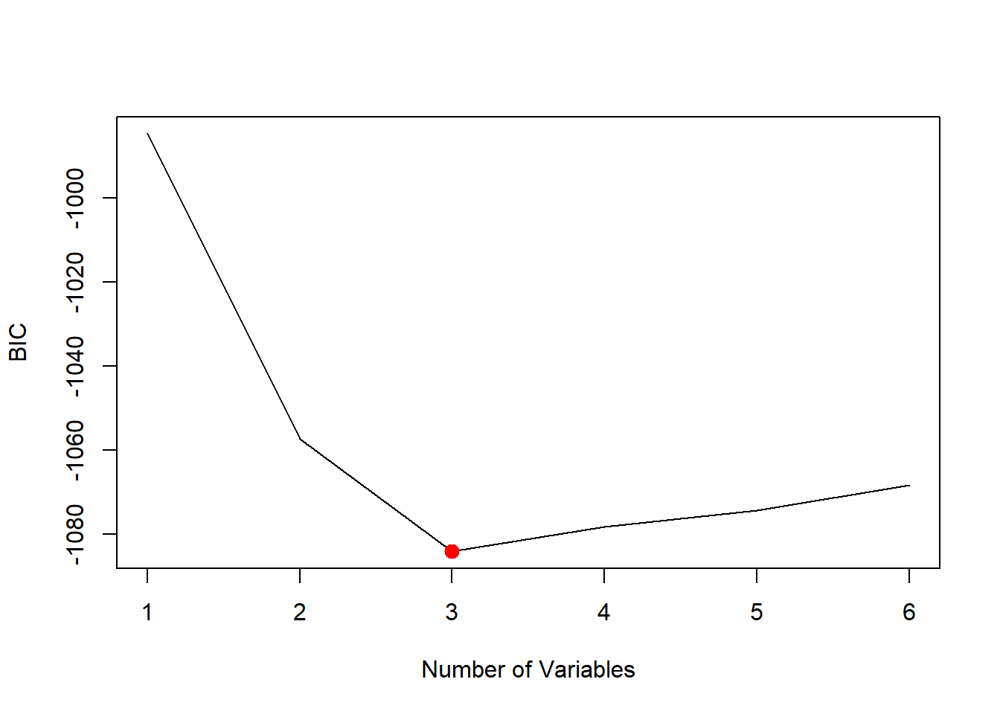
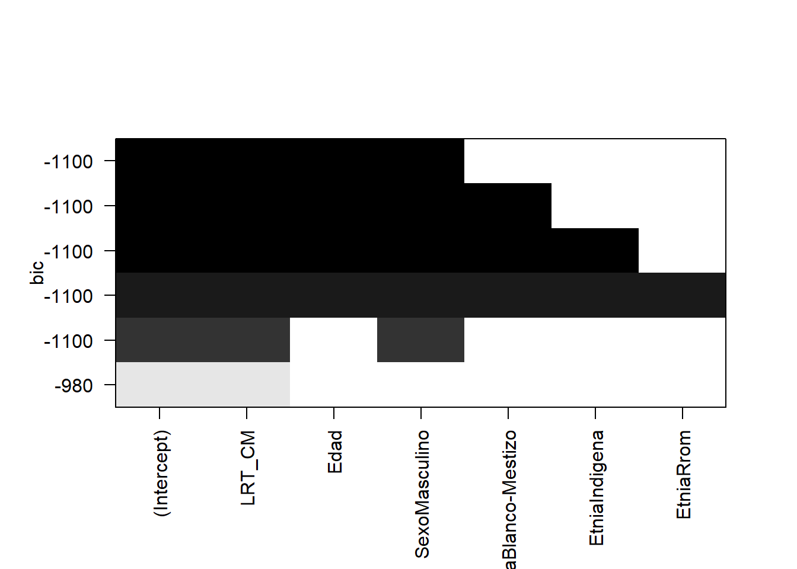
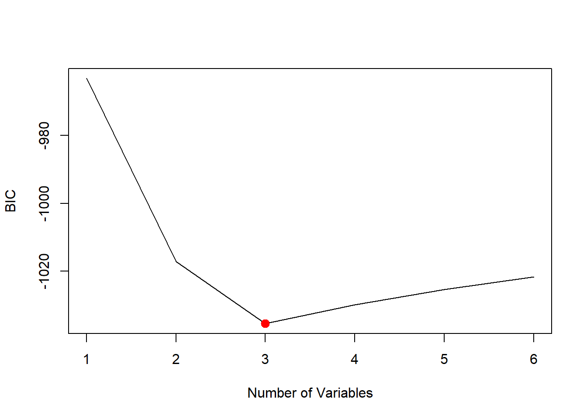
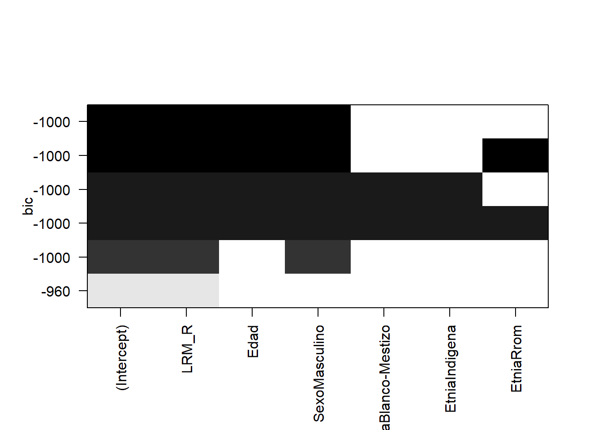
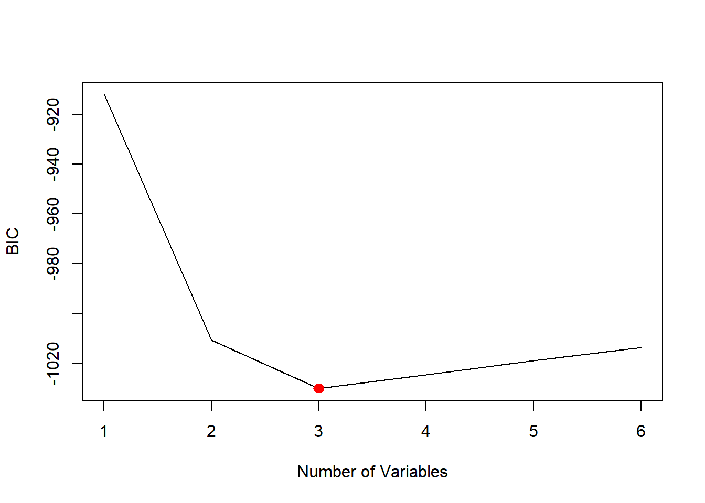
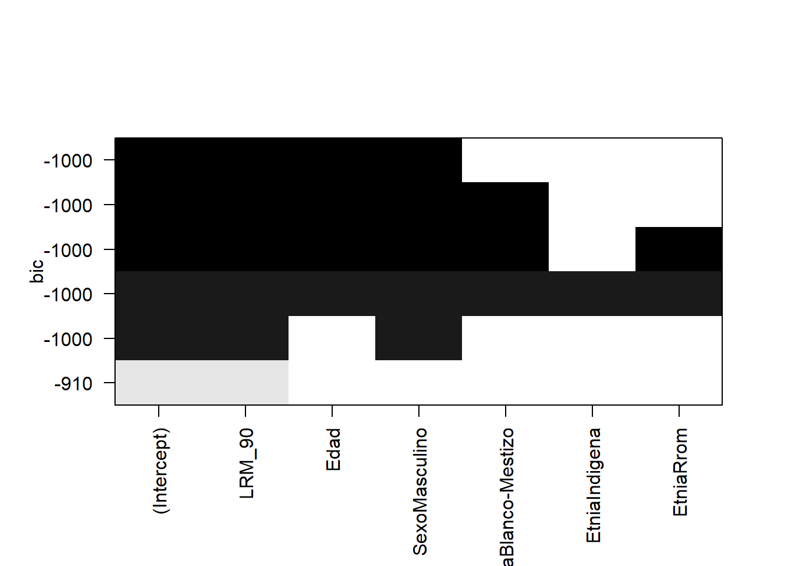
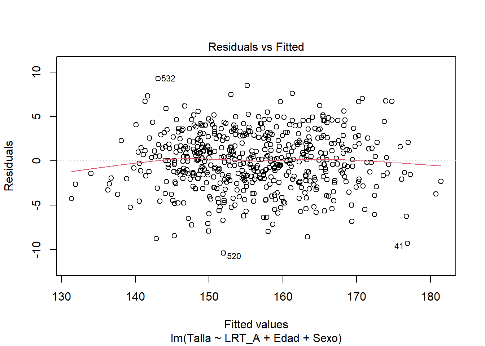
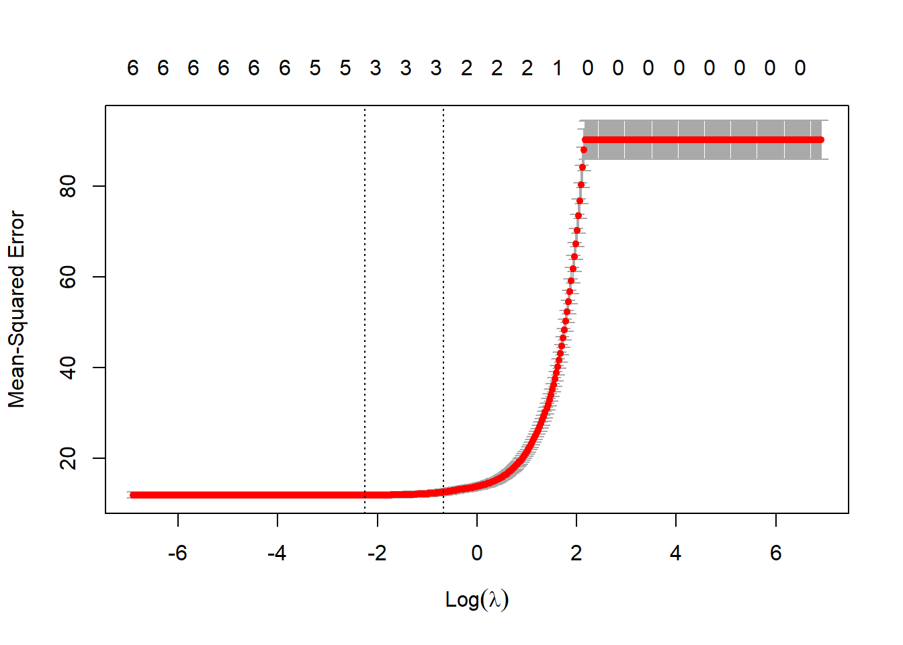

[1] -1089.766 -1127.650 -1155.202 -1149.550 -1145.850 -1141.407Modelos
En esta sección se ajustarán tres tipos de modelos —Normal, LASSO y Gamma— para estimar la talla de adultos mayores en Colombia, utilizando diferentes mediciones: LRT_A, LRT_CM, LRM_R y LRM_90.
La elección de estos modelos se basa en la revisión de la literatura, que indica que las tallas suelen seguir una distribución normal. Además, se incluyen los modelos LASSO y Gamma debido a la naturaleza de la variable respuesta (talla), que es siempre positiva, lo que los hace adecuados para este tipo de datos.
Modelo Normal
LRT Antropómetro
Se hace una búsqueda del mejor modelo normal por cada número de posibles combinaciones de variables de las cuales se tenga evidencia que influyen en la talla de adultos mayores (Edad, Sexo, Etnia y LRT_A). Primero se hará la búsqueda usando todo el conjunto de datos.
A continuación, se muestra el BIC para cada mejor modelo del correspondiente tamaño:
Usando el criterio del BIC, el mejor modelo es el de 3 variables:
[1] 3

Los coeficientes del mejor modelo usando el criterio de BIC son:
(Intercept) LRT_A Edad SexoMasculino
59.1083106 2.1894102 -0.1216628 3.0653353 Esto sugiere usar el modelo \(Talla = 59.11 + 2.19 LRT\_A - 0.12 Edad + 3.06 Sexo\),
\[Sexo = \begin{cases} 1 & \text{si sexo = masculino} \\ 0 & \text{si sexo = femenino} \end{cases}\]
Ahora se usará K - fold cross validation con el fin de calcular directamente los errores de predicción sobre los datos de testeo y evitar así el sobreajuste.
- Se crean K - folds (pliegues) de aproximadamente igual tamaño. En este caso fijamos \(k = 10\). Como tenemos \(543\) datos, cada pliegue será de tamaño 54 o 55.
- El \(k-ésimo\) pliegue servirá para testear, y los demás pliegues se juntan para entrenar los modelos. Osea que se usará un \(90\%\) de los datos para entrenamiento y \(10\%\) para test.
- Para \(k = 1,\cdots,10,\) se calcula el MSE.
- Luego, se promedia el MSE a través de los \(10\) pliegues y se obtiene el MSE promedio.
El MSE para el modelo de 3 variables (\(LRT\_A, Edad, Sexo\)) es:
[1] 10.39225LRT cinta métrica
Se hace una búsqueda del mejor modelo normal por cada número de posibles combinaciones de variables de las cuales se tenga evidencia que influyen en la talla de adultos mayores (Edad, Sexo, Etnia y LRT_CM). Primero se hará la búsqueda usando todo el conjunto de datos.
A continuación, se muestra el BIC para cada mejor modelo del correspondiente tamaño:
[1] -984.6341 -1057.4421 -1084.1402 -1078.3435 -1074.4531 -1068.4135Usando el criterio BIC, el mejor modelo es el de 3 variables:
[1] 3

Los coeficientes del mejor modelo usando el criterio de BIC son:
(Intercept) LRT_CM Edad SexoMasculino
57.3048203 2.1612215 -0.1281442 4.1354010 Esto sugiere usar el modelo \(Talla = 57.30 + 2.16 LRT\_CM - 0.13 Edad + 4.13 Sexo\),
\[Sexo = \begin{cases} 1 & \text{si sexo = Masculino} \\ 0 & \text{si sexo = Femenino} \end{cases}\]
Ahora usamos nuevamente K - fold cross validation con el fin de calcular directamente los errores de predicción sobre los datos de testeo y evitar así el sobreajuste de la misma manera que se realizó para el modelo normal de \(LRT_A\).
El MSE para el modelo de 3 variables (\(LRT\_CM, Edad, Sexo\)) es:
[1] 11.78225LRM pierna estirada
Se hace una búsqueda del mejor modelo normal por cada número de posibles combinaciones de variables de las cuales se tenga evidencia que influyen en la talla de adultos mayores (Edad, Sexo, Etnia y LRM_R). Primero se hará la búsqueda usando todo el conjunto de datos.
A continuación, se muestra el BIC para cada mejor modelo del correspondiente tamaño:
[1] -963.144 -1017.156 -1035.460 -1029.924 -1025.438 -1021.676Usando el criterio BIC, el mejor modelo es el de 3 variables:
[1] 3

Los coeficientes del mejor modelo usando el criterio de BIC son:
(Intercept) LRM_R Edad SexoMasculino
68.048537 2.217070 -0.115388 3.814406 Esto sugiere usar el modelo \(Talla = 68.04 + 2.21 LRM\_R - 0.11 Edad + 3.81 Sexo\),
\[Sexo = \begin{cases} 1 & \text{si sexo = Masculino} \\ 0 & \text{si sexo = Femenino} \end{cases}\]
Nuevamente, se hará la búsqueda del mejor modelo usando K - fold cross validation con el fin de calcular directamente los errores de predicción sobre los datos de testeo y evitar así el sobreajuste.
El MSE para el modelo de 3 variables (\(LRM\_R, Edad, Sexo\)) es:
[1] 12.99465LRM pierna a 90°
Se hace una búsqueda del mejor modelo normal por cada número de posibles combinaciones de variables de las cuales se tenga evidencia que influyen en la talla de adultos mayores (Edad, Sexo, Etnia y LRM_90). Primero se hará la búsqueda usando todo el conjunto de datos.
A continuación, se muestra el BIC para cada mejor modelo del correspondiente tamaño:
[1] -911.8475 -1010.8238 -1030.2001 -1024.5910 -1019.0264 -1013.7421Usando el criterio BIC, el mejor modelo es el de 3 variables:
[1] 3

Los coeficientes del mejor modelo usando el criterio de BIC son:
(Intercept) LRM_90 Edad SexoMasculino
66.2016693 2.2163573 -0.1184789 4.8293028 Esto sugiere usar el modelo \(Talla = 66.20 + 2.22 LRM\_90 - 0.12 Edad + 4.83 Sexo\),
\[Sexo = \begin{cases} 1 & \text{si sexo = Masculino} \\ 0 & \text{si sexo = Femenino} \end{cases}\]
Ahora se hará la búsqueda del mejor modelo usando K - fold cross validation con el fin de calcular directamente los errores de predicción sobre los datos de testeo y evitar así el sobreajuste.
El MSE para el modelo de 3 variables (\(LRM\_90, Edad, Sexo\)) es:
[1] 13.08059Resúmen modelos Normal
En general, los modelos ajustados incluyeron como variables la edad, el sexo y el intercepto, variando únicamente entre las mediciones utilizadas: LRT_A, LRT_CM, LRM_90 y LRM_R. Cada modelo produjo diferentes estimaciones para los parámetros, lo que resulta en ecuaciones distintas para estimar la talla de los adultos mayores.
El criterio principal para seleccionar el mejor modelo, ya sea normal o de otro tipo, será el menor error cuadrático medio (MSE). Esto se debe a que un MSE más bajo indica que el modelo realiza estimaciones de la talla más cercanas a los valores reales, reflejando una mayor precisión.
La tabla de los errores cuadráticos medios para la regresión lineal simple es la siguiente:
Modelo Medida MSE
1 Normal LRT_A 10.39225
2 Normal LRT_CM 11.78225
3 Normal LRM_R 12.99465
4 Normal LRM_90 13.08059El modelo con menor error cuadrático medio es el que tiene en cuenta la medida LRT con antropómetro:
\[Talla = 59.11 + 2.19 LRT\_A - 0.12 Edad + 3.06 Sexo\]
A continuación, se procederá a validar los supuestos del mejor modelo identificado. Esta validación es crucial, ya que si los supuestos no se cumplen, el modelo no puede considerarse válido y sus resultados podrían no ser confiables.
Call:
lm(formula = Talla ~ LRT_A + Edad + Sexo, data = datos)
Residuals:
Min 1Q Median 3Q Max
-10.4374 -2.0311 0.1058 2.2783 9.2680
Coefficients:
Estimate Std. Error t value Pr(>|t|)
(Intercept) 59.10831 2.90260 20.364 < 2e-16 ***
LRT_A 2.18941 0.05360 40.848 < 2e-16 ***
Edad -0.12166 0.02066 -5.888 6.88e-09 ***
SexoMasculino 3.06534 0.38877 7.885 1.76e-14 ***
---
Signif. codes: 0 '***' 0.001 '**' 0.01 '*' 0.05 '.' 0.1 ' ' 1
Residual standard error: 3.207 on 539 degrees of freedom
Multiple R-squared: 0.8863, Adjusted R-squared: 0.8856
F-statistic: 1400 on 3 and 539 DF, p-value: < 2.2e-16El modelo tiene un \(R^2\) ajustado de \(0.8856\), es decir que aproximadamente un \(88.56\%\) de la variabilidad de la talla es explicada por LRT_A, la edad y el sexo.
Linealidad: Con el fin de verificar que la relación entre la talla y las variables LRT_A (discriminando por sexo) y la edad es lineal, se visualiza el gráfico de los residuos vs los valores predichos del modelo \(\left(\hat{e},\hat{y} \right)\):

El gráfico no muestra ningún patrón marcado, la ubicación de los puntos parece ser aleatoria alrededor de cero, indicando también homoscedasticidad en los residuales y posible independencia de los mismos. El gráfico muestra algunos valores atípicos que valdría la pena explorar.
Independencia de los errores: Aunque nuestros datos no son temporales, el test de Durbin-Watson nos puede ayudar a evaluar la autocorrelación de los errores del modelo:
Durbin-Watson test
data: reg
DW = 2.0507, p-value = 0.7173
alternative hypothesis: true autocorrelation is greater than 0La estadística del test de Durbin-Watson es muy cercano a \(2\), se concluye que los errores son independientes.
Normalidad de los errores: Se realiza el gráfico QQ-plot para comparar la distribución de los residuales del modelo con la distribución teórica de una normal. También se hace el test de normalidad de Lilliefors y Anderson-Darling:
Lilliefors (Kolmogorov-Smirnov) normality test
data: reg$residuals
D = 0.02184, p-value = 0.7651
Anderson-Darling normality test
data: reg$residuals
A = 0.41295, p-value = 0.337El QQ-plot muestra que los residuales se ajustan aceptablemente a una distribución normal. Las pruebas de normalidad de Lilliefors y Anderson-Darling también apoyan este resultado.
Homoscedasticidad: Aunque no se vio un patron que indicara heteroscedasticidad en el gráfico de los residuales vs los valores predichos, a continuación se muestra el gráfico de los residuales estandarizados vs los valores predichos con el fin de mejorar la interpretabilidad de la homoscedasticidad y tener una visión más clara de las observaciones atípicas e influyentes:

No se observan patrones que indiquen hereroscedasticidad en los residuos (forma de cono o embudo). Se siguien observando algunas observaciones atípicas y/o influyentes.
Adicional, se realiza la prueba de Breusch-Pagan para verificar la homoscedasticidad de los residuales:
studentized Breusch-Pagan test
data: reg
BP = 0.8348, df = 3, p-value = 0.8411No se rechaza la hipótesis nula de que los errores del modelo son homoscedasticos.
Multicolinealidad: Se verifica que las variables incluídas en el modelo no están altamente correlacionadas entre sí, y así evitar obtener resultados inestables que dificulten la interpretabilidad de los coeficientes del modelo. Se calculan los Factores de Inflación de la Varianza (VIFs):
LRT_A Edad Sexo
1.942637 1.038371 1.995345 Dado que los VIFs son mucho menores a 5, esto indica que cada variable tiene una correlación moderada (leve) con las demás. Por lo que se puede concluir que los resultados del modelo posiblemente no estarán muy afectados por la multicolinealidad.
El modelo está bien especificado: Se hace el test de RESET para examinar si el modelo ajustado está bien especificado o si se han omitido términos no lineales o interacciones importantes:
RESET test
data: reg
RESET = 0.62101, df1 = 4, df2 = 535, p-value = 0.6477
RESET test
data: reg
RESET = 0.98691, df1 = 2, df2 = 537, p-value = 0.3734No se rechaza la hipótesis nula de que el modelo está bien especificado.
Observaciones atípicas y de alto apalancamiento:

Usando los residuales estudentizados, se observan \(5\) datos atípicos.


StudRes Hat CookD
41 -2.9464281 0.01514476 0.032906079
505 -0.6485772 0.03066342 0.003330247
520 -3.3029648 0.01104953 0.029923010
538 -0.8302135 0.02463562 0.004354784En total 29 observaciones superan el umbral especificado para la distancia de Cook, pero esto no significa que todas sean influyentes (alto leverage). Particularmente hay 3 observaciones que son marcadas como influyentes significativamente según la distancia de Cook. Esto indica que la inclusión de estas observaciones en el modelo pueden tener una influencia significativa en los coeficientes del modelo y en la predicción de la talla. Se debe explorar con cautela estas observaciones y decidir qué hacer con ellas.
Para esto, se puede comprobar el cambio en los coeficientes del modelo al excluir estas observaciones influyentes.
Call:
lm(formula = Talla ~ LRT_A + Edad + Sexo, data = datos, subset = {
setdiff(row(datos)[, 1], c(533, 43, 549))
})
Residuals:
Min 1Q Median 3Q Max
-10.4573 -2.0353 0.1184 2.2692 9.2417
Coefficients:
Estimate Std. Error t value Pr(>|t|)
(Intercept) 59.22121 2.91027 20.349 < 2e-16 ***
LRT_A 2.18636 0.05401 40.477 < 2e-16 ***
Edad -0.12112 0.02073 -5.843 8.88e-09 ***
SexoMasculino 3.07005 0.38910 7.890 1.70e-14 ***
---
Signif. codes: 0 '***' 0.001 '**' 0.01 '*' 0.05 '.' 0.1 ' ' 1
Residual standard error: 3.208 on 537 degrees of freedom
Multiple R-squared: 0.8846, Adjusted R-squared: 0.8839
F-statistic: 1372 on 3 and 537 DF, p-value: < 2.2e-16Las estimaciones de los coeficientes del modelo sin las obervaciones influyentes han cambiado un poco respecto al modelo original. El \(R^2\) ajustado ha incrementado un poco también.
Modelo Lasso
LRT Antropómetro
Para ajustar el modelo LASSO, se consideran todas las variables que podrían influir en la estimación de la talla: Edad, Sexo, Etnia y LRT_A. El modelo se encargará automáticamente de seleccionar las variables más significativas.
Se utiliza el método de k-fold cross validation con \(k = 10\) usando los mismos folds utilizados en el modelo normal para que las métricas sean comparables. El objetivo principal de la validación cruzada en el modelo LASSO es obtener el valor de \(\lambda\) que minimice el error cuadrático medio cruzado a través de los 10 folds. Es decir, se busca el valor de \(\lambda\) que minimice el MSE a través de los 10 folds (lo mismo que en el modelo normal).
El modelo LASSO ajusta los coeficientes de las variables, llevando a cero aquellos que no son significativos. Además, determina de forma óptima el parámetro lambda que controla la penalización y selección de variables.
Se ajusta el modelo en cada fold usando cv.glmnet:

[1] 0.1106848[1] 10.45275Los coeficientes resultantes del modelo ajustado son:
7 x 1 sparse Matrix of class "dgCMatrix"
s1
(Intercept) 58.51417927
LRT_A 2.17429764
Edad -0.10202039
SexoMasculino 2.87000568
EtniaBlanco-Mestizo .
EtniaIndigena 0.03660454
EtniaRrom . Finalmente, la ecuación propuesta por este modelo para estimar la talla en adultos mayores es:
\[Talla = 58.514 + 2.174 \cdot LRT\_A - 0.102 \cdot Edad + 2.870 \cdot SexoMasculino + 0.037 \cdot EtniaIndigena\] \[Sexo = \begin{cases} 1 & \text{si sexo = Masculino} \\ 0 & \text{si sexo = Femenino} \end{cases}\] \[BM = \begin{cases} 1 & \text{si Etnia = Blanco-Mestizo} \\ 0 & \text{en otro caso} \end{cases}\] \[Ind = \begin{cases} 1 & \text{si Etnia = Indígena} \\ 0 & \text{en otro caso} \end{cases}\]
LRT cinta métrica
Para ajustar el modelo LASSO, se consideran todas las variables que podrían influir en la estimación de la talla: Edad, Sexo, Etnia y LRT_CM. El modelo se encargará automáticamente de seleccionar las variables más significativas.
Se utiliza el método de k-fold cross validation con \(k = 10\) usando los mismos folds utilizados en el modelo normal para que las métricas sean comparables. El objetivo principal de la validación cruzada en el modelo LASSO es obtener el valor de \(\lambda\) que minimice el error cuadrático medio cruzado a través de los 10 folds. Es decir, se busca el valor de \(\lambda\) que minimice el MSE a través de los 10 folds (lo mismo que en el modelo normal).
El modelo LASSO ajusta los coeficientes de las variables, llevando a cero aquellos que no son significativos. Además, determina de forma óptima el parámetro lambda que controla la penalización y selección de variables.
Se ajusta el modelo en cada fold usando cv.glmnet:

[1] 0.1047225[1] 11.84011Los coeficientes resultantes del modelo ajustado son:
7 x 1 sparse Matrix of class "dgCMatrix"
s1
(Intercept) 56.831070
LRT_CM 2.145520
Edad -0.109548
SexoMasculino 3.951163
EtniaBlanco-Mestizo .
EtniaIndigena .
EtniaRrom . Finalmente, la ecuación propuesta por este modelo para estimar la talla en adultos mayores es:
\[Talla = 56.831 + 2.146 \cdot LRT\_CM - 0.110 \cdot Edad + 3.951 \cdot Sexo\]
\[Sexo = \begin{cases} 1 & \text{si sexo = Masculino} \\ 0 & \text{si sexo = Femenino} \end{cases}\]
LRM pierna estirada
Para ajustar el modelo LASSO, se consideran todas las variables que podrían influir en la estimación de la talla: Edad, Sexo, Etnia y LRM_R. El modelo se encargará automáticamente de seleccionar las variables más significativas.
Se utiliza el método de k-fold cross validation con \(k = 10\) usando los mismos folds utilizados en el modelo normal para que las métricas sean comparables. El objetivo principal de la validación cruzada en el modelo LASSO es obtener el valor de \(\lambda\) que minimice el error cuadrático medio cruzado a través de los 10 folds. Es decir, se busca el valor de \(\lambda\) que minimice el MSE a través de los 10 folds (lo mismo que en el modelo normal).
El modelo LASSO ajusta los coeficientes de las variables, llevando a cero aquellos que no son significativos. Además, determina de forma óptima el parámetro lambda que controla la penalización y selección de variables.
Se ajusta el modelo en cada fold usando cv.glmnet:

[1] 0.01550175[1] 13.04057Los coeficientes resultantes del modelo ajustado son:
7 x 1 sparse Matrix of class "dgCMatrix"
s1
(Intercept) 65.5249311
LRM_R 2.2166275
Edad -0.1155135
SexoMasculino 3.7972716
EtniaBlanco-Mestizo 2.5682231
EtniaIndigena 3.5081921
EtniaRrom 5.3139123Finalmente, la ecuación propuesta por este modelo para estimar la talla en adultos mayores es:
\[Talla = 65.525 + 2.217 \cdot LRM\_R - 0.116 \cdot Edad + 3.797 \cdot Sexo + 2.568 \cdot BM + 3.508 \cdot Ind + 5.314 \cdot Rrom\]
\[Sexo = \begin{cases} 1 & \text{si sexo = Masculino} \\ 0 & \text{si sexo = Femenino} \end{cases}\]
\[BM = \begin{cases} 1 & \text{si Etnia = Blanco-Mestizo} \\ 0 & \text{en otro caso} \end{cases}\]
\[Ind = \begin{cases} 1 & \text{si Etnia = Indigena} \\ 0 & \text{en otro caso} \end{cases}\]
\[Rrom = \begin{cases} 1 & \text{si Etnia = Rrom} \\ 0 & \text{en otro caso} \end{cases}\]
LRM pierna a 90°
Para ajustar el modelo LASSO, se consideran todas las variables que podrían influir en la estimación de la talla: Edad, Sexo, Etnia y LRM_90. El modelo se encargará automáticamente de seleccionar las variables más significativas.
Se utiliza el método de k-fold cross validation con \(k = 10\) usando los mismos folds utilizados en el modelo normal para que las métricas sean comparables. El objetivo principal de la validación cruzada en el modelo LASSO es obtener el valor de \(\lambda\) que minimice el error cuadrático medio cruzado a través de los 10 folds. Es decir, se busca el valor de \(\lambda\) que minimice el MSE a través de los 10 folds (lo mismo que en el modelo normal).
El modelo LASSO ajusta los coeficientes de las variables, llevando a cero aquellos que no son significativos. Además, determina de forma óptima el parámetro lambda que controla la penalización y selección de variables.
Se ajusta el modelo en cada fold usando cv.glmnet:

[1] 0.07939618[1] 13.12027Los coeficientes resultantes del modelo ajustado son:
7 x 1 sparse Matrix of class "dgCMatrix"
s1
(Intercept) 65.4928997
LRM_90 2.2048555
Edad -0.1047034
SexoMasculino 4.6877149
EtniaBlanco-Mestizo 0.2938109
EtniaIndigena .
EtniaRrom 0.6123650Finalmente, la ecuación propuesta por este modelo para estimar la talla en adultos mayores es:
\[Talla = 65.493 + 2.205 \cdot LRM\_90 - 0.105 \cdot Edad + 4.688 \cdot Sexo + 0.294 \cdot BM + 0.612 \cdot Rrom\]
\[Sexo = \begin{cases} 1 & \text{si sexo = Masculino} \\ 0 & \text{si sexo = Femenino} \end{cases}\]
\[BM = \begin{cases} 1 & \text{si Etnia = Blanco-Mestizo} \\ 0 & \text{en otro caso} \end{cases}\]
\[Rrom = \begin{cases} 1 & \text{si Etnia = Rrom} \\ 0 & \text{en otro caso} \end{cases}\]
Resumen modelos LASSO
En general, los modelos ajustados incluyeron más variables que las tres del modelo normal (edad, sexo y mediciones). Cada modelo produjo diferentes estimaciones para los parámetros, lo que resulta en ecuaciones distintas para estimar la talla de los adultos mayores.
Nuevamente, es preferible el modelo LASSO que tenga menor error cuadrático medio. Y en general, es preferible el modelo (normal o LASSO) que tenga menor MSE.
La tabla de los errores cuadráticos medios de los modelos ajustados hasta el momento es:
Modelo Medida MSE
5 LASSO LRT_A 10.45275
6 LASSO LRT_CM 11.84011
7 LASSO LRM_R 13.04057
8 LASSO LRM_90 13.12027El modelo normal con LRT_A sigue siendo el mejor, ya que hasta el momento es el que presenta el menor MSE. Por lo tanto, no se procederá a verificar los supuestos para ninguno de los modelos LASSO, dado que el modelo normal continúa siendo superior.
Modelo Gamma
LRT Antropómetro
Inicialmente, se ajusta el modelo Gamma que incluye a todas las variables regresoras que se cree influyen en la estimación de la talla.
Call:
glm(formula = Talla ~ LRT_A + Edad + Etnia + Sexo, family = Gamma(),
data = datos)
Coefficients:
Estimate Std. Error t value Pr(>|t|)
(Intercept) 1.044e-02 1.358e-04 76.905 < 2e-16 ***
LRT_A -8.823e-05 2.245e-06 -39.291 < 2e-16 ***
Edad 5.140e-06 8.817e-07 5.830 9.57e-09 ***
EtniaBlanco-Mestizo -1.209e-04 5.954e-05 -2.031 0.0428 *
EtniaIndigena -1.696e-04 7.985e-05 -2.123 0.0342 *
EtniaRrom -1.767e-04 1.381e-04 -1.280 0.2012
SexoMasculino -1.325e-04 1.650e-05 -8.032 6.14e-15 ***
---
Signif. codes: 0 '***' 0.001 '**' 0.01 '*' 0.05 '.' 0.1 ' ' 1
(Dispersion parameter for Gamma family taken to be 0.0004486863)
Null deviance: 2.00425 on 542 degrees of freedom
Residual deviance: 0.24156 on 536 degrees of freedom
AIC: 2849.2
Number of Fisher Scoring iterations: 3A continuación se realiza una selección de variables con el método “forward” de tal forma que se minimice el AIC. El modelo seleccionado resulta ser el que incluye Edad, Sexo y LRT_A.
Start: AIC=3986.45
Talla ~ 1
Df Deviance AIC
+ LRT_A 1 0.28112 3521.3
+ Sexo 1 0.96443 3706.6
<none> 2.00425 3986.5
+ Etnia 3 1.98665 3987.7
+ Edad 1 2.00387 3988.3
Step: AIC=2921.58
Talla ~ LRT_A
Df Deviance AIC
+ Sexo 1 0.25839 2879.7
+ Edad 1 0.27254 2907.0
<none> 0.28112 2921.6
+ Etnia 3 0.27963 2924.7
Step: AIC=2877.81
Talla ~ LRT_A + Sexo
Df Deviance AIC
+ Edad 1 0.24391 2849.4
<none> 0.25839 2877.8
+ Etnia 3 0.25684 2880.5
Step: AIC=2848.47
Talla ~ LRT_A + Sexo + Edad
Df Deviance AIC
<none> 0.24391 2848.5
+ Etnia 3 0.24156 2849.3Los coeficientes del modelo son
Call:
glm(formula = Talla ~ LRT_A + Edad + Sexo, family = Gamma(),
data = datos)
Coefficients:
Estimate Std. Error t value Pr(>|t|)
(Intercept) 1.033e-02 1.225e-04 84.303 < 2e-16 ***
LRT_A -8.813e-05 2.245e-06 -39.249 < 2e-16 ***
Edad 4.989e-06 8.805e-07 5.666 2.39e-08 ***
SexoMasculino -1.318e-04 1.653e-05 -7.973 9.35e-15 ***
---
Signif. codes: 0 '***' 0.001 '**' 0.01 '*' 0.05 '.' 0.1 ' ' 1
(Dispersion parameter for Gamma family taken to be 0.0004505331)
Null deviance: 2.00425 on 542 degrees of freedom
Residual deviance: 0.24391 on 539 degrees of freedom
AIC: 2848.5
Number of Fisher Scoring iterations: 3Entonces, la ecuación propuesta por este modelo para estimar el logaritmo de la talla en adultos mayores es:
\[\ln(Talla) = 1.033e-02 - 8.813e-05 LRT\_A + 4.989e-06 Edad - 1.318e-04 Sexo\]
\[Sexo = \begin{cases} 1 & \text{si sexo = Masculino} \\ 0 & \text{si sexo = Femenino} \end{cases}\]
Se utiliza el método dek-fold cross validation con \(k = 10\) y y se calcula el promedio del MSE obtenido en cada iteración. El MSE para este modelo es:
[1] 11.06637LRT cinta métrica
Inicialmente, se ajusta el modelo Gamma que incluye a todas las variables regresoras que se cree influyen en la estimación de la talla.
Call:
glm(formula = Talla ~ LRT_CM + Edad + Etnia + Sexo, family = Gamma(),
data = datos)
Coefficients:
Estimate Std. Error t value Pr(>|t|)
(Intercept) 1.051e-02 1.484e-04 70.831 < 2e-16 ***
LRT_CM -8.717e-05 2.422e-06 -35.988 < 2e-16 ***
Edad 5.328e-06 9.379e-07 5.680 2.21e-08 ***
EtniaBlanco-Mestizo -1.068e-04 6.342e-05 -1.685 0.0927 .
EtniaIndigena -1.448e-04 8.505e-05 -1.703 0.0892 .
EtniaRrom -6.135e-05 1.472e-04 -0.417 0.6771
SexoMasculino -1.753e-04 1.697e-05 -10.328 < 2e-16 ***
---
Signif. codes: 0 '***' 0.001 '**' 0.01 '*' 0.05 '.' 0.1 ' ' 1
(Dispersion parameter for Gamma family taken to be 0.0005091626)
Null deviance: 2.00425 on 542 degrees of freedom
Residual deviance: 0.27374 on 536 degrees of freedom
AIC: 2917.1
Number of Fisher Scoring iterations: 3A continuación se realiza una selección de variables con el método “forward” de tal forma que se minimice el AIC. El modelo seleccionado resulta ser el que incluye Edad, Sexo y LRT_A.
Start: AIC=3986.45
Talla ~ 1
Df Deviance AIC
+ LRT_CM 1 0.33696 3536.5
+ Sexo 1 0.96443 3706.6
<none> 2.00425 3986.5
+ Etnia 3 1.98665 3987.7
+ Edad 1 2.00387 3988.3
Step: AIC=3019.97
Talla ~ LRT_CM
Df Deviance AIC
+ Sexo 1 0.29131 2948.6
+ Edad 1 0.32934 3009.7
<none> 0.33696 3020.0
+ Etnia 3 0.33599 3024.4
Step: AIC=2942.91
Talla ~ LRT_CM + Sexo
Df Deviance AIC
+ Edad 1 0.27549 2915.5
<none> 0.29131 2942.9
+ Etnia 3 0.29019 2946.8
Step: AIC=2914.59
Talla ~ LRT_CM + Sexo + Edad
Df Deviance AIC
<none> 0.27549 2914.6
+ Etnia 3 0.27374 2917.2Los coeficientes del modelo son
Call:
glm(formula = Talla ~ LRT_CM + Edad + Sexo, family = Gamma(),
data = datos)
Coefficients:
Estimate Std. Error t value Pr(>|t|)
(Intercept) 1.041e-02 1.345e-04 77.376 < 2e-16 ***
LRT_CM -8.703e-05 2.416e-06 -36.026 < 2e-16 ***
Edad 5.205e-06 9.352e-07 5.566 4.12e-08 ***
SexoMasculino -1.745e-04 1.697e-05 -10.282 < 2e-16 ***
---
Signif. codes: 0 '***' 0.001 '**' 0.01 '*' 0.05 '.' 0.1 ' ' 1
(Dispersion parameter for Gamma family taken to be 0.0005096052)
Null deviance: 2.00425 on 542 degrees of freedom
Residual deviance: 0.27549 on 539 degrees of freedom
AIC: 2914.6
Number of Fisher Scoring iterations: 3Entonces, la ecuación propuesta por este modelo para estimar el logaritmo de la talla en adultos mayores es:
\[\ln(Talla) = 1.041e-02 - 8.703e-05 LRT\_CM + 5.205e-06 Edad - 1.745e-04 Sexo\]
\[Sexo = \begin{cases} 1 & \text{si sexo = Masculino} \\ 0 & \text{si sexo = Femenino} \end{cases}\]
Se utiliza el método dek-fold cross validation con \(k = 10\) y y se calcula el promedio del MSE obtenido en cada iteración. El MSE para este modelo es:
[1] 12.28992LRM pierna estirada
Inicialmente, se ajusta el modelo Gamma que incluye a todas las variables regresoras que se cree influyen en la estimación de la talla.
Call:
glm(formula = Talla ~ LRM_R + Edad + Etnia + Sexo, family = Gamma(),
data = datos)
Coefficients:
Estimate Std. Error t value Pr(>|t|)
(Intercept) 1.010e-02 1.459e-04 69.195 < 2e-16 ***
LRM_R -8.954e-05 2.621e-06 -34.157 < 2e-16 ***
Edad 4.943e-06 9.752e-07 5.068 5.53e-07 ***
EtniaBlanco-Mestizo -1.320e-04 6.581e-05 -2.005 0.0454 *
EtniaIndigena -1.788e-04 8.822e-05 -2.026 0.0432 *
EtniaRrom -2.369e-04 1.526e-04 -1.553 0.1211
SexoMasculino -1.624e-04 1.797e-05 -9.037 < 2e-16 ***
---
Signif. codes: 0 '***' 0.001 '**' 0.01 '*' 0.05 '.' 0.1 ' ' 1
(Dispersion parameter for Gamma family taken to be 0.0005478053)
Null deviance: 2.00425 on 542 degrees of freedom
Residual deviance: 0.29489 on 536 degrees of freedom
AIC: 2957.5
Number of Fisher Scoring iterations: 3A continuación se realiza una selección de variables con el método “forward” de tal forma que se minimice el AIC. El modelo seleccionado resulta ser el que incluye Edad, Sexo y LRT_A.
Start: AIC=3986.45
Talla ~ 1
Df Deviance AIC
+ LRM_R 1 0.34839 3539.6
+ Sexo 1 0.96443 3706.6
<none> 2.00425 3986.5
+ Etnia 3 1.98665 3987.7
+ Edad 1 2.00387 3988.3
Step: AIC=3038.09
Talla ~ LRM_R
Df Deviance AIC
+ Sexo 1 0.31104 2982.0
+ Edad 1 0.34223 3030.5
<none> 0.34839 3038.1
+ Etnia 3 0.34633 3040.9
Step: AIC=2978.5
Talla ~ LRM_R + Sexo
Df Deviance AIC
+ Edad 1 0.29780 2957.4
<none> 0.31104 2978.5
+ Etnia 3 0.30899 2980.9
Step: AIC=2956.89
Talla ~ LRM_R + Sexo + Edad
Df Deviance AIC
<none> 0.29780 2956.9
+ Etnia 3 0.29489 2957.6Los coeficientes del modelo son
Call:
glm(formula = Talla ~ LRM_R + Edad + Sexo, family = Gamma(),
data = datos)
Coefficients:
Estimate Std. Error t value Pr(>|t|)
(Intercept) 9.972e-03 1.306e-04 76.374 < 2e-16 ***
LRM_R -8.941e-05 2.621e-06 -34.106 < 2e-16 ***
Edad 4.774e-06 9.741e-07 4.901 1.26e-06 ***
SexoMasculino -1.618e-04 1.801e-05 -8.987 < 2e-16 ***
---
Signif. codes: 0 '***' 0.001 '**' 0.01 '*' 0.05 '.' 0.1 ' ' 1
(Dispersion parameter for Gamma family taken to be 0.0005501601)
Null deviance: 2.0042 on 542 degrees of freedom
Residual deviance: 0.2978 on 539 degrees of freedom
AIC: 2956.9
Number of Fisher Scoring iterations: 3Entonces, la ecuación propuesta por este modelo para estimar el logaritmo de la talla en adultos mayores es:
\[\ln(Talla) = 9.972e-03 - 8.941e-05 LRM\_R + 4.774e-06 Edad - 1.618e-04 Sexo\]
\[Sexo = \begin{cases} 1 & \text{si sexo = Masculino} \\ 0 & \text{si sexo = Femenino} \end{cases}\]
Se utiliza el método dek-fold cross validation con \(k = 10\) y y se calcula el promedio del MSE obtenido en cada iteración. El MSE para este modelo es:
[1] 13.42149LRM pierna 90°
Inicialmente, se ajusta el modelo Gamma que incluye a todas las variables regresoras que se cree influyen en la estimación de la talla.
Call:
glm(formula = Talla ~ LRM_90 + Edad + Etnia + Sexo, family = Gamma(),
data = datos)
Coefficients:
Estimate Std. Error t value Pr(>|t|)
(Intercept) 1.015e-02 1.488e-04 68.205 < 2e-16 ***
LRM_90 -8.948e-05 2.654e-06 -33.715 < 2e-16 ***
Edad 4.913e-06 9.837e-07 4.995 7.99e-07 ***
EtniaBlanco-Mestizo -9.842e-05 6.634e-05 -1.483 0.139
EtniaIndigena -9.528e-05 8.898e-05 -1.071 0.285
EtniaRrom -1.621e-04 1.539e-04 -1.053 0.293
SexoMasculino -2.031e-04 1.737e-05 -11.692 < 2e-16 ***
---
Signif. codes: 0 '***' 0.001 '**' 0.01 '*' 0.05 '.' 0.1 ' ' 1
(Dispersion parameter for Gamma family taken to be 0.0005573112)
Null deviance: 2.00425 on 542 degrees of freedom
Residual deviance: 0.29974 on 536 degrees of freedom
AIC: 2966.4
Number of Fisher Scoring iterations: 3A continuación se realiza una selección de variables con el método “forward” de tal forma que se minimice el AIC. El modelo seleccionado resulta ser el que incluye Edad, Sexo y LRT_A.
Start: AIC=3986.45
Talla ~ 1
Df Deviance AIC
+ LRM_90 1 0.38114 3548.4
+ Sexo 1 0.96443 3706.6
<none> 2.00425 3986.5
+ Etnia 3 1.98665 3987.7
+ Edad 1 2.00387 3988.3
Step: AIC=3086.87
Talla ~ LRM_90
Df Deviance AIC
+ Sexo 1 0.31443 2994.1
+ Edad 1 0.37671 3082.6
<none> 0.38114 3086.9
+ Etnia 3 0.38057 3092.1
Step: AIC=2984.39
Talla ~ LRM_90 + Sexo
Df Deviance AIC
+ Edad 1 0.30110 2963.4
<none> 0.31443 2984.4
+ Etnia 3 0.31366 2989.1
Step: AIC=2962.86
Talla ~ LRM_90 + Sexo + Edad
Df Deviance AIC
<none> 0.30110 2962.9
+ Etnia 3 0.29974 2966.4Los coeficientes del modelo son
Call:
glm(formula = Talla ~ LRM_90 + Edad + Sexo, family = Gamma(),
data = datos)
Coefficients:
Estimate Std. Error t value Pr(>|t|)
(Intercept) 1.005e-02 1.338e-04 75.15 < 2e-16 ***
LRM_90 -8.939e-05 2.645e-06 -33.79 < 2e-16 ***
Edad 4.792e-06 9.800e-07 4.89 1.34e-06 ***
SexoMasculino -2.022e-04 1.735e-05 -11.66 < 2e-16 ***
---
Signif. codes: 0 '***' 0.001 '**' 0.01 '*' 0.05 '.' 0.1 ' ' 1
(Dispersion parameter for Gamma family taken to be 0.0005567802)
Null deviance: 2.0042 on 542 degrees of freedom
Residual deviance: 0.3011 on 539 degrees of freedom
AIC: 2962.9
Number of Fisher Scoring iterations: 3Entonces, la ecuación propuesta por este modelo para estimar el logaritmo de la talla en adultos mayores es:
\[\ln(Talla) = 1.005e-02 - 8.939e-05 LRT\_A + 4.792e-06 Edad - 2.022e-04 Sexo\]
\[Sexo = \begin{cases} 1 & \text{si sexo = Masculino} \\ 0 & \text{si sexo = Femenino} \end{cases}\]
Se utiliza el método dek-fold cross validation con \(k = 10\) y y se calcula el promedio del MSE obtenido en cada iteración. El MSE para este modelo es:
[1] 13.47367Resumen modelos Gamma
En general, los modelos Gamma ajustados incluyeron las mismas tres variables del modelo normal (edad, sexo y mediciones). Cada modelo produjo diferentes estimaciones para los parámetros, lo que resulta en ecuaciones distintas para estimar la talla de los adultos mayores.
De nuevo, es preferible el modelo Gamma que tenga menor error cuadrático medio. Y en general, es preferible el modelo (normal, LASSO o Gamma) que tenga menor MSE.
La tabla de los errores cuadráticos medios de los modelos ajustados hasta el momento es:
Modelo Medida MSE
1 Normal LRT_A 10.39225
2 Normal LRT_CM 11.78225
3 Normal LRM_R 12.99465
4 Normal LRM_90 13.08059
5 LASSO LRT_A 10.45275
6 LASSO LRT_CM 11.84011
7 LASSO LRM_R 13.04057
8 LASSO LRM_90 13.12027
9 Gamma LRT_A 11.06637
10 Gamma LRT_CM 12.28992
11 Gamma LRM_R 13.42149
12 Gamma LRM_90 13.47367El modelo normal con LRT_A sigue siendo el mejor, ya que hasta el momento es el que presenta el menor MSE. Por lo tanto, no se procederá a verificar los supuestos para ninguno de los modelos Gamma, dado que el modelo normal continúa siendo superior.
Propuesta: Nuevas fórmulas
Dado que el modelo ajustado con menor error cuadrático medio es el normal con LRT con antropómetro, la fórmula que se propone en esta investigación para realizar la estimación de la talla de adultos mayores en Colombia es
\[Talla = 59.11 + 2.19 LRT\_A - 0.12 Edad + 3.06 Sexo\]
\[Sexo = \begin{cases} 1 & \text{si sexo = masculino} \\ 0 & \text{si sexo = femenino} \end{cases}\]
Que también puede verse como dos fórmulas, una para cada sexo:
- Sexo masculino: \(Talla = 62.17 + 2.19 LRT\_A - 0.12 Edad\), la interpretación de cada parámetro es:
- Intercepto: Suponiendo el caso hipotético en que un adulto mayor tenga \(LRT\_A = 0\) y \(Edad = 0\), entonces la talla estimada para ese adulto mayor de sexo masculino es \(62.17\).
- LRT_A: Por cada centímetro adicional que mida la LRT_A del adulto mayor masculino, entonces la estimación de su talla aumenta \(2.19\) centímetros.
- Edad: Por cada año cumplido adicional que tenga el adulto mayor de sexo masculino, la estimación de su talla disminuye \(0.12cm\).
- Sexo femenino: \(Talla = 59.11 + 2.19 LRT\_A - 0.12 Edad\), la interpretación de cada parámetro es:
- Intercepto: Suponiendo el caso hipotético en que un adulto mayor tenga \(LRT\_A = 0\) y \(Edad = 0\), entonces la talla estimada para ese adulto mayor de sexo femenino es \(59.11\).
- LRT_A: Por cada centímetro adicional que mida la LRT_A del adulto mayor femenino, entonces la estimación de su talla aumenta \(2.19\) centímetros.
- Edad: Por cada año cumplido adicional que tenga el adulto mayor de sexo femenino, la estimación de su talla disminuye \(0.12cm\).
Fórmulas Benjumea
Se calculan las estimaciones de las tallas a partir de las fórmulas de Benjumea, esto para compararlas con las estimaciones de la fórmula propuesta en esta investigación.
Las fórmulas de Benjumea son:
Indígena masculino: \(82.695 + 1.745 LRT_A - 0.121 Edad\)
Indígena femenino: \(90.281 + 1.436 LRT_A - 0.102 Edad\)
Afrodescendiente masculino: \(9.298 + 1.855 LRT_A - 0.141 Edad\)
Afrodescendiente femenino: \(76.233 + 1.767 LRT_A - 0.098 Edad\)
Blanco-Mestizo masculino: \(75.514 + 1.883 LRT_A - 0.108 Edad\)
Blanco-Mestizo femenino: \(86.497 + 1.553 LRT_A - 0.119 Edad\)
Cabe resaltar que no existe fórmula para la etnia Rrom, por lo que hubo un individuo en la muestra a quien no fue posible realizar la estimación por medio de las fórmulas de Benjumea.
LRT Antropómetro
Las fórmulas de Benjumea tienen en cuenta la medición LRT. El error cuadrático medio de las fórmulas de Benjumea con LRT_A es
[1] 12.90973LRT cinta métrica
Las fórmulas de Benjumea tienen en cuenta la medición LRT. El error cuadrático medio de las fórmulas de Benjumea con LRT_CM es
[1] 14.78904Resumen fórmulas Benjumea
La tabla de los errores cuadráticos medios con las fórmulas de Benjumea es:
Modelo Medida MSE
13 Benjumea LRT_A 12.90973
14 Benjumea LRT_CM 14.78904No parecen dar buenas estimaciones.
Fórmulas Arango y Zamora
Se calculan las estimaciones de las tallas a partir de las fórmulas de Arango y Zamora, esto para compararlas con las estimaciones de la fórmula propuesta en esta investigación.
Las fórmulas de Arango y Zamora son:
- Sexo masculino: \(119.6 + 1.121 LRM_R - 0.117 Edad\)
- Sexo femenino: \(107.7 + 1.263 LRM_R - 0.159 Edad\)
LRM pierna estirada
Las fórmulas de Arango y Zamora tienen en cuenta la medición LRM. El error cuadrático medio de las fórmulas de Arango y Zamora con LRM_R es
[1] 22.15239LRM pierna a 90°
Las fórmulas de Arango y Zamora tienen en cuenta la medición LRM. El error cuadrático medio de las fórmulas de Arango y Zamora con LRM_90 es
[1] 19.98007Resumen fórmulas Arango y Zamora
La tabla de los errores cuadráticos medios con las fórmulas de Benjumea es:
Modelo Medida MSE
15 Arango, Zamora LRT_CM 22.15239
16 Arango, Zamora LRT_CM 19.98007No parecen dar buenas estimaciones.
Conclusión
A continuación, se muestra la tabla de los MSE de todos los modelos ajustados en la investigación y de las fórmulas de Benjumea y de Arango y Zamora.
Modelo Medida MSE
1 Normal LRT_A 10.39225
2 Normal LRT_CM 11.78225
3 Normal LRM_R 12.99465
4 Normal LRM_90 13.08059
5 LASSO LRT_A 10.45275
6 LASSO LRT_CM 11.84011
7 LASSO LRM_R 13.04057
8 LASSO LRM_90 13.12027
9 Gamma LRT_A 11.06637
10 Gamma LRT_CM 12.28992
11 Gamma LRM_R 13.42149
12 Gamma LRM_90 13.47367
13 Benjumea LRT_A 12.90973
14 Benjumea LRT_CM 14.78904
15 Arango, Zamora LRT_CM 22.15239
16 Arango, Zamora LRT_CM 19.98007Se observa que el modelo que presenta menor MSE es el modelo normal con LRT con antropómetro, de modo que, se concluye que este es el mejor modelo pues sus estimaciones de la talla son más cercanas a la verdadera talla del adulto mayor.
Note
Por lo que las fórmulas que mejor estiman la talla de los adultos mayores en Colombia, según la base de datos analizada, son:
\[Talla = 59.11 + 2.19 LRT\_A - 0.12 Edad + 3.06 Sexo\]
\[Sexo = \begin{cases} 1 & \text{si sexo = masculino} \\ 0 & \text{si sexo = femenino} \end{cases}\]